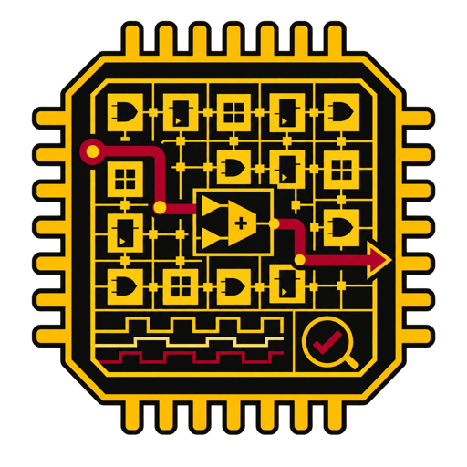
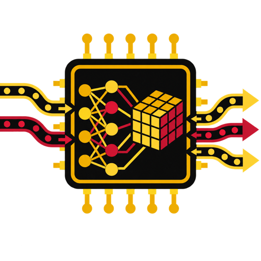

Teaching
ECE 327/627: Digital Hardware Systems (3 offerings)

The course covers the design, implementation, and verification of digital hardware systems using a hardware description language. It begins with the fundamentals of SystemVerilog and the register-transfer level (RTL) design abstraction, then builds up the core structural elements of a digital system: compute datapaths, control finite-state machines (FSMs), memory elements, and latency-insensitive interfaces.
The course next examines how a design is analyzed and optimized against quality metrics (e.g., resource usage, throughput, latency, and power consumption) by covering topics such as pipelining, resource sharing, static timing analysis, and interconnect delay. It closes with an introduction to FPGA architecture and how RTL designs map onto the underlying hardware. Functional verification using SystemVerilog testbenches and waveform-based debugging is addressed throughout the course.
Students apply this material in a sequence of four labs that use a commercial FPGA tool suite (AMD/Xilinx Vivado) and require deploying and demonstrating working circuits on an FPGA board, supported by weekly tutorials. Course prerequisites are introductory digital logic design (ECE 124 or equivalent) and basic programming skills.
Terms Taught and Student Course Perception Scores
Scores are reported on a 5.0-point scale; response counts appear in parentheses.
- Spring 2026(66 feedback responses)
- Winter 2026(71 feedback responses)
- Spring 2025(79 feedback responses)
ECE 493T35/720T10: Special Topics in Computer Hardware: Machine Learning Hardware Systems (1 offering)

The course explores the design and implementation of specialized computer hardware systems for machine learning (ML) workloads. It begins with a brief overview of common ML workloads and their compute and memory characteristics, then covers the architectural and microarchitectural details of key components in custom ML acceleration chips through examples of several commercial accelerators.
The course next examines model–hardware co-design principles for efficient ML computation (e.g., pruning, quantization, knowledge distillation, and hardware-aware neural architecture search). It closes with an introduction to compiler infrastructure for ML hardware and discusses the ML-driven architectural evolution of general-purpose computing platforms, such as GPUs and FPGAs. Topics related to large-scale distributed ML deployments and the hardware–software stack for large language model (LLM) serving may also be addressed.
Students engage with recent research through paper readings, guest lectures from industry speakers, hands-on labs using commercial accelerators, and a major team project. Course prerequisites are digital RTL design (ECE 327 or equivalent) and basic programming skills. A background in computer architecture or ML theory and applications is helpful but not required.
Terms Taught and Student Course Perception Scores
Scores are reported on a 5.0-point scale; response counts appear in parentheses.
- Spring 2026(61 feedback responses)